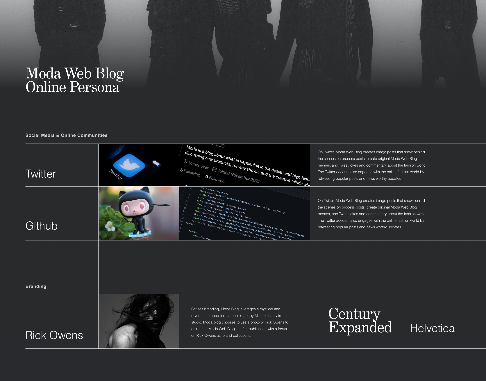

MODA WEB

Assignments
November 22
Peer Review 3: Midnight Stories.
Today, Moda Blog is reviewing Midnight Stories. Aikam Cheema is the creator and author of Midnight Stories. In an online persona crafted to speak for the blog, Cheema is known as ‘AKC’ on Midnight Stories. AKC describes themselves as a wonderfully confused author, who just happens to have a passion for writing. The description is whimsical, casual, and personal. AKC continues to describe themeselves as an introverted weirdo. Despite this, they proceed to state that they find joy in meeting new people, creating memories and having novel experiences. Midnight Stories is an outlet for AKC to publish original pieces of writing and poetry on the world wide web.
The site structure leverages Wordpress’s classic theme to list the categories with clear hierarchy through a side menu. The heading and sidemenu have stronger type to convery hierarchy, and they sit on a background image. With the contrast of the image, it isnt the clearest to read all of the headings. The only imagery used for branding to identify ‘Trying the UnderRated’ is a picturesque scene of a mountain. Below the recent posts section, accessibility is lost as trees in the image eat up the small Nota Serif of the blog titles. Rays of light shine over a craggy face communicating that another WordPress default theme have been selected. For typography, all fonts used on Trying the UnderRated are expressed as a range of weights from the default Wordpress Noto Serif. While Jaime did not choose the font, Wordpress was able to pick a safe choice for a type style that attempts to match any possible Wordpress blogging topic. I was unable to find social media, however I am certain that The UnderRated Blog is working toward a genuine social media identity.
In response to an inquiry from an author at The Guardian about her refusal to let advertisers onto her site, Bulgarian essayist Maria Popova stated, “It doesn’t put the reader’s best interests first…I don’t believe in this model”. (Popova, 2012). At Midnight Stories, AKC certianly puts their readers best interests first. While AKC is not running advertisements, I can tell that they have a good understanding of the pain points, frictions, aspirations, and overall needs of their target audience group. At Midnight Stories, the clear focus of the site is all about the poetry and creative works including two short stories written by AKC. The writing continues to support the whimsical and magical image of Midnight Stories. Common themes include spirits and ghosts, deep forests and stars, and realms beyond our world.
AKC considers marketability toward their targeted audience group through brnd positioning and visual artifacts. The Midnight Stories logo depicts a dark book with tentacle like tendrils reaching out towards a blue sky. There are dark clouds and dust in the air beneath a dark crescent moon. The logo evokes themes of both nature and spirituality. The natural elements include the moon, sky, clouds, and fern like branches of energy that stem from the centre of the open book. Spiritual elements include the book, the tendrils, and the crescent moon. This logo is present on the ‘about’ page and in the favicon for the site. Midnight Stories leverages the ‘x-blog’ theme by wordpress. The serif typography and drop shadows give Midnight Stories a professional and modern feel. The hue of blue that AKC has chosen to represent Midnight Stories is neither to cold or too warm. It feels almost like a baby blue which adds an air of naivety that pairs well with the sense of wonder conveyed in the Midnight Blog poetry and short stories.
Midnight Stories is a great blog that showcases imaginative poetry and short stories for readers who are looking for a mystical and easy read before bed time. I believe that Midnight Stories has a strong level of marketability to their target audience group, that can be furthered through greater branding development and a more common use of brand elements.
Midnight Stories
References.
Tom Bleymaier. 2013. On Advertising – Maria Popvova
November 5 2022
Mini Assingment 5: Online Self Info Graphic
November 5 2022
Mini Assingment 4: Rick Owens Living Moda Product Remix
October 20 2022
Mini Assingment 3
November 4
Peer Review 2: Trying the UnderRated.
Trying the UnderRated is a blog that fights against misjudgement in the world through the host and personality, Jaimee Lee. Jaimee Lee is a Psychology student in their last semester. In a modern experience, Jaime is returning to the online world in search of a step outside their comfort zone. For ‘Trying the UnderRated’, a wide range of activities, science, social media, and more are discussed. Jaime has sought to craft an online persona that is able to weigh in on multiple channels of human culture.
Tanya Basu is a senior reporter covering the intersection of humans and technology at MIT Technology. In a blog for Tech Crunch, she introduces many voices from the digital gardening community. Tom Critchlow is a consultant who has been cultivating his digital garden for years. He states that “With blogging, you’re talking to a large audience, and ... with digital gardening, you’re talking to yourself. You focus on what you want to cultivate over time”. (Basu, 2020). Jaime Lee is speaking very personally in their perspective, however they are aware that what is under rated and over rated will change as public perception waxes and wanes over time. Sara Garner, a software engineer who created a blog about all the museums across the world that she has visited. “I’m going for a feeling of wonderment, a connection across time,” she says. (Basu, 2020) Jaime Lee is certainly cultivating a diverse digital garden with a wire array of topics.
The site structure leverages Wordpress’s classic theme to list the categories with clear hierarchy through a side menu. The heading and sidemenu have stronger type to convery hierarchy, and they sit on a background image. With the contrast of the image, it isnt the clearest to read all of the headings. The only imagery used for branding to identify ‘Trying the UnderRated’ is a picturesque scene of a mountain. Below the recent posts section, accessibility is lost as trees in the image eat up the small Nota Serif of the blog titles. Rays of light shine over a craggy face communicating that another WordPress default theme have been selected. For typography, all fonts used on Trying the UnderRated are expressed as a range of weights from the default Wordpress Noto Serif. While Jaime did not choose the font, Wordpress was able to pick a safe choice for a type style that attempts to match any possible Wordpress blogging topic. I was unable to find social media, however I am certain that The UnderRated Blog is working toward a genuine social media identity.
Unfortunately, 'Trying the UnderRated' is currently battling a Wordpress web page mishap. As of now, the home page and top level domain returns an error. TryingThe Underated’s home page features only a single blog whose bold Noto Serif states ‘Oops! That page can’t be found.’. Beneath it, the caption reads ‘It looks like nothing was found at this location. Maybe try a search?’. If Jaimee Lee stitches up this error, their site will signal a strong step outside their comfort zone and a successful return to the world wide web.
October 19 2022
Kenna Clifford Peer Review.
Kenna Clifford weaves a carefully crafted world of poetic lullabies that suit a perfect read before winding down for the evening. Kenna’s blog begins with a center aligned image that draws all the attention. A work by Japanese artist, ‘Akira Nagasawa’, this painting help sets the atmosphere that Kenna crafts through her writing tone. Nagasawa graduated from Tokyo National University of Fine Art and Music, completed an M.F.A. at Tokyo National University of Fine Art and Music, and is now an assistant Professor of Tohoku University of Art & Design. In Nagasawa’s painting, a wolf or dog is depicted in shades of autumn that call back to the cozy atmosphere Kenna seeks to create. Atop the wolf is a constellation of stars, a pattern that gives the painting a cosmic vibe of wonder and dreaming. Nagasawa is a talented artist with solo exhibitions running annually from 1994 - 2004. I hope to see more of Nagasawas work in Kenna’s blog - as I am a fan of how Nagasawa’s visual aesthetic and Kennas written tone intersect!
On the home page, Kenna introduces her site with vivid and imaginative language. The tone that Kenna sets is a comforting yet mysterious mood. By crafting this tone, Kenna is personifying her voice as a character that readers can identify with. In Kenna’s first lullaby, she carefully imagines a world of wonder and magic while describing a moment in time for the natural world as winter sets in. Particularly, Kenna discusses the common fruit fly, ‘Drosophila melanogaster’. The way that Kenna approaches her questions about the fruit flies relationship with winter and human domains continues to develop her character as a writer in a very similar fashion to how she wrote her introduction. Kenna is certainly breaking ground fast for a well-developed and truly personified online self.
In Kenna’s ‘about’ section, she describes herself as a writer, filmmaker, and poet. The theme of her blog is well-chosen to suit her strengths and passions in life! This is always a good choice for an online blog, as it is easy to create an authentic online persona if you are speaking from your talents - and from the heart. In an image depicting Kenna, her eyes are closed. This is potentially to further drive home the thematic element of bedtime and dreaming. The image of Kenna also shows her holding a bowl of mysterious contents. While likely unintentional, aspects like this still help create the mysterious world that Kenna seeks to craft.
October 9 2022
Mini Assingment 2: Superhero Guest Post - Goku.
Hi! Im Goku. I am earths strongest defender, and I hail from an alien race of beings called Saiyans! Moda Web Blog has reached out to me to write a guest post for Moda! Before I get into fashion, I want to tell you more about me! My Saiyan name is Kakarot. I was born somewhere in the universe, and raised on earth since I was a tiny lad by my great teacher, Master Roshi. After plenty of adventures, I have settled down with my wife and three children. My children are great fighters just like me! Initially, the Saiyans sent me here as a baby to one day grow up and destroy all life on earth. The Saiyans unfortunately died off in battle with space pirate and overall terror, Frieza, before I reached this solar system. Thanks to this, I grew up to fall in love with earthly culture! My favourite street wear brand is Supreme, a skate company whose relevance is gained through the great skateboarding minds of Jason Dill and Anthony Van Engelen. My favourite item from the Supreme winter 2023 collection is the ‘by any means necessary’ North Face Puff. The puffer jacket is a collaboration between Supreme and technical winter goods brand, The North Face. It keeps me warm when I am flying above the atmosphere, and keeps my fly, fly! I wear the spacious puff with a black box logo Supreme crew neck. The contrast between the red and black is totally poppin! Plus, the cotton feels totally fresh! HIYAAAAAAAAAA! It gets me so pumped up. What does not get me pumped up is the recent acquisition of Supreme to The Carlyle Group. The Carlyle Group is a private equity company that profits off the manufacturing of military weapon sales and tear gas! RRRAAAAAAHHHh! It makes me so mad. Looks like soon I will have to save the world again! Thanks for reading! Son Goku ~! OUT!!